This MoP Classic Archaeology leveling guide will teach you the basics about this profession and shows you how to level it up to 600.
This MoP Classic Archaeology leveling guide will teach you the basics about this profession and shows you how to level it up to 600.
Archaeology is a secondary profession, so you won't gain any real end-game passive benefit from it like with other professions. Most items you can get, like pets, toys, and mounts, have no in-game power. There are also epic and rare armors, even for level 85 players, but they won't be as good as an end-game Blacksmithing item. This profession is mostly for fun; you don't need to have Archaeology. It's optional.
What's New in MoP Classic
- Two new races added: Pandaren and Mogu, each with their own fragments and artifacts.
- Digsites now have six dig locations instead of three, making surveying more efficient.
- Sha mobs can spawn at Pandaria digsites. Killing them grants bonus fragments and a chance at a keystone.
- Common Pandaren and Mogu artifacts turn into Restored Artifacts, which can be traded to Brann Bronzebeard at the Seat of Knowledge for extra fragments, for other races from Cataclysm.
Archaeology Trainers
This is the full list of Archaeology trainers in MoP Classic. You can train every rank of Archaeology from every trainer.
| Horde | Alliance |
|---|---|
|
|
Dig Sites
Once you learn Archaeology, open up your map and zoom out to the continent level. You will see little shovel symbols on your map. Those are the dig sites.
There are always 4 dig sites per continent, and it won't change on logout, server restart, or anything; you have to dig one out to get a new dig site. These dig sites are player-specific, you don't have to worry about competition.

Surveying Dig Sites
You will find the  Survey ability in your spellbook's profession tab. This ability is used for finding and digging out artifact fragments.
Survey ability in your spellbook's profession tab. This ability is used for finding and digging out artifact fragments.
Step 1
Go to a dig site, and use  Survey. A little telescope on a tripod will spawn.
Survey. A little telescope on a tripod will spawn.
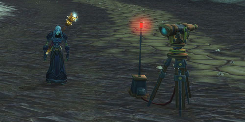
Step 2
Check which direction the little telescope points to. Then, check its color. Red means you are far away, yellow means you are kinda close, and green means the artifact fragment is less than 30 yards away.

Step 3
Move in the direction it points and use the use Survey again. Repeat until an artifact pops up instead of the telescope.
When you loot 6 fragments in a dig site, you can no longer dig there, and a new area will show up on your map.
TIP: After digging something up, use Survey again. Sometimes, the next one will be in the same spot.
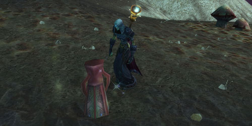
Solving Artifact Projects
When you loot your first artifact fragment, you will start a research project specific to a particular race, and when you have enough fragments, you can click the little Solve button to complete that Artifact. If you have excess fragments, they won't go to waste. They will start a new project.
Every time you complete an artifact of a certain race, you will be assigned a new artifact of that race.
Unfortunately, you cannot control which research projects you get. So, you will have to complete the same research projects multiple times with a particular race until you get the one you wanted in the first place.
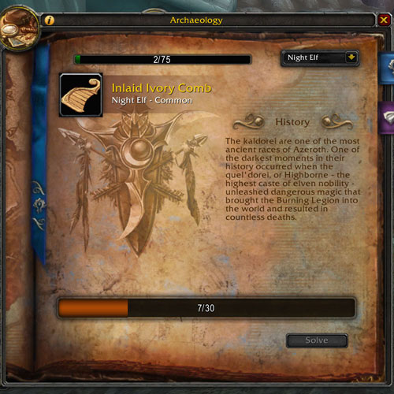
Archaeology Races
Dig sites will belong to one of the 11 archaeology races. The race with which each site is associated will determine the type of fragments you gain when you Survey the site.
| Skill Req. | Zone | Race |
|---|---|---|
| 1 | Eastern Kingdoms/Kalimdor | Fossil, Night Elf, Troll, Dwarf |
| 300 | Outland | Draenei, Orc |
| 375 | Northrend | Nerubian, Vrykul |
| 450 | Uldum | Tol'vir |
| 525 | Pandaria | Mogu, Pandaren |
Keystones
When you loot a fragment at a dig site, you sometimes get keystones like  Troll Tablet,
Troll Tablet,  Highborne Scroll,
Highborne Scroll,  Dwarf Rune Stone, etc. You can use these to speed up your research a little bit.
Dwarf Rune Stone, etc. You can use these to speed up your research a little bit.
A slot appears on some artifacts where you can place one. Not every artifact, but rare artifacts will often let you use two or three at once. The keystone will increase your fragment count by 12.
This table below shows you the full list of keystones you can find.
| Race | Keystone |
|---|---|
| Troll | |
| Night Elf | |
| Dwarf | |
| Fossil | No Keystone |
| Orc | Orc Blood Text |
| Draenei | |
| Nerubian | 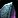 Nerubian Obelisk |
| Vrykul | |
| Tol'vir | 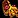 Tol'vir Hieroglyphic |
| Mogu | 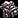 Mogu Statue Piece |
| Pandaren | Pandaren Pottery Shard |
Leveling Archaeology
Leveling Archaeology is much faster in MoP Classic compared to Cataclysm. In Cataclysm, reaching 525 could take over 20 hours, but with the MoP changes, you can get from 1 to 600 in about 6 hours if you have epic flying.
You gain skill points just by surveying digsites, all the way up to 600. Completing artifacts also gives bonus skill points: +5 for common and +15 for rare artifacts, regardless of race.
Don't forget to visit your trainer between these levels:
- 50-75: Journeyman
- 125-150: Expert
- 200-225: Artisan
- 275-300: Master
- 350-375: Grand Master
- 425-450: Illustrious Grand Master
- 500-525: Zen Master
Archaeology Rewards
The majority of artifacts you solve are usually worthless gray vendor trash like Skull-Shaped Planter but occasionally you will get a rare artifact.
New Rare Archaeology Artifacts in MoP
All of these weapons and wearable artifact items are level 85 and Bind to Account. They can be mailed to other characters on your account and used for gearing.
| Artifact | Race | Description |
|---|---|---|
| Anatomical Dummy | Mogu | Places a practice dummy on the ground. |
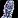 Quilen Statuette |
Mogu | trinket |
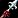 Spear of Xuen |
Pandaren | Polearm |
| Umbrella of Chi-Ji | Pandaren | Off-hand |
Old Rares from Cataclysm
This is a cautionary warning for anyone considering trying to start farming some of these rare artifacts. (Marked them with an "Extremely Rare" note)
An example would be Zin'rokh, Destroyer of Worlds, which is what probably most people want to get.
Some of these artifacts are extremely rare (probably like 1% chance). You might get lucky and get them in like 20 solves, but there is a good chance you won't get them after farming 8 hours a day for a week.
These Artifacts are not something everyone will get by simply leveling Archaeology. This can be a painful and frustrating grind. Archeology is random in EVERY aspect (dig site spawns, project chance, token drops), which makes farming these artifacts a HUGE gamble, wasting a LOT of your time.
Night Elf
Night Elf dig sites are typically found in Kalimdor, but there are a few in Eastern Kingdoms and Northrend.
| Item | Type | Description |
|---|---|---|
| Highborne Soul Mirror | Toy | When activated, a semi-see-thru copy of you appears a few feet away, takes a couple steps towards you and stops. It will then stand rooted in place for about 15 seconds, turning to face you if you move around, then disappears. (10 min CD) |
| Druid and Priest Statue Set | Toy | Creates a large green pillar of light for 10s that surrounds your character. (1 min CD) |
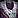 Queen Azshara's Dressing Gown | Cloth Chest | Requires level 51 to equip, but it's item level is much higher than anything you could find at this level. (Binds to Account) |
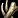 Bones of Transformation | Toy | Transforms the user into a Naga for 20 seconds. |
| Kaldorei Wind Chimes | Toy | It shows a message: "Name" Holds his Wind Chimes to the wind. Then a typical wind chime sound plays. |
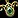 Wisp Amulet | Toy | Take on wisp form for 2 min. (10 Min Cooldown) |
| Tyrande's Favorite Doll | Trinket (caster) | Requires level 85 to equip. (Extremely rare find) |
Fossil
Fossil dig sites are usually found in Kalimdor and Eastern Kingdoms.
| Item | Type | Description |
|---|---|---|
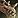 Fossilized Raptor | Mount | Raptor mount. |
| Ancient Amber | Toy | Become trapped in amber. (30 Min Cooldown) |
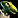 Pterrordax Hatchling | Pet | Non-combat companion. |
| Fossilized Hatchling | Pet | Non-combat companion. |
| Extinct Turtle Shell | Shield (Tank) | Requires level 85 to equip. (Extremely rare find) |
Dwarf
Dwarf artifacts are found in centers of historical dwarven habitation, such as the Badlands, the Wetlands, and Loch Modan.
| Item | Type | Description |
|---|---|---|
| The Innkeeper's Daughter | Toy | Alternative Hearthstone. (they share CD) |
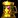 Chalice of the Mountain Kings | Toy | Four dancing female dwarves appear for roughly 20 seconds. Additionally, the in-game music changes to a tavern-ish music. |
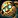 Clockwork Gnome | Pet | Non-combat companion. |
| Staff of Sorcerer-Thane Thaurissan | Staff (Caster) | Requires level 85 to equip. (Extremely rare find) |
Troll
Troll dig sites are typically found in Eastern Kingdoms, but there are also a few in Kalimdor and Northrend.
| Item | Type | Description |
|---|---|---|
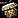 Haunted War Drum | Toy | It plays troll drum music instead of the current music. |
| Voodoo Figurine | Pet | Non-combat companion. |
| Zin'rokh, Destroyer of Worlds | Two-Hand Sword | Requires level 85 to equip. (Extremely rare find) |
Draenei
Draenei fragments are all found in Outland. You will need 300 skill to access these dig sites.
| Item | Type | Description |
|---|---|---|
| Arrival of the Naaru | Toy | When you click this a 3-second scene with three Draenei walking up to a naaru appears. |
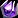 The Last Relic of Argus | Toy | On use teleports you to a random place. (12 Hrs CD) |
Orc
Orc fragments are exclusively found in Outland, particularly in areas such as Nagrand. You will need 300 skill to access these digsites.
| Item | Type | Description |
|---|---|---|
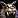 Headdress of the First Shaman | Mail Helm | Requires Level 61. (Binds to Account) |
Nerubian
Nerubian fragments are all found in Northrend, typically in areas of Nerubian habitation such as Dragonblight. You will need 350 skill to access these sites. /p>
| Item | Type | Description |
|---|---|---|
| Puzzle Box of Yogg-Saron | Toy | Puzzle Box of Yogg-Saron whispers you upon use. |
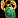 Blessing of the Old God | Toy | It turns you into a Green Qiraji Battle Tank for 20 sec. (10min CD) |
Vrykyl
Vrykul fragments are exclusively found in Northrend, especially in Howling Fjord and Icecrown areas. You must have 375+ skill to access these digsites.
| Item | Type | Description |
|---|---|---|
| Vrykyl Drinking Horn | Toy | This item has no cooldown and is not on the global cooldown. It gives you a 10 minute buff that increases your size, puts a Vrykul helm on you and causes you to have a manly roar. |
| Nifflevar Bearded Axe | One-Hand Axe | Requires Level 71 to equip. Almost twice the raw DPS than any other weapon at this level. (Binds to Account) |
Tol'vir
Tol'vir fragments are exclusively found in Uldum. You must also have 450+ skill to access these dig sites.
Unfortunately, dig site spawn locations in Uldum share the same continent as Kalimdor - a maximum total of four. This means you're gonna have to keep digging Fossil & Night Elf dig sites all over Kalimdor in order to possibly have the Uldum dig sites spawn.
| Item | Type | Description |
|---|---|---|
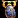 Pendant of the Scarab Storm | Toy | It summons a group of scarabs that will follow you around for 20 sec. (10 min CD) |
| Crawling Claw | Pet | Non-combat companion. |
| Ring of the Boy Emperor | Ring | Requires level 85 to equip. (Extremely rare find) |
| Staff of Ammunae | Staff | Requires level 85 to equip. (Extremely rare find) |
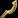 Scimitar of the Sirocco | One-Hand Sword | Requires level 85 to equip. (Extremely rare find) |
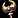 Scepter of Azj'Aqir | Mount | This will teach you how to summon the Ultramarine Qiraji Battle Tank, a re-skinned version of the Black Qiraji Battle Tank. But you can use this outside Ahn'Qiraj. (Extremely rare find) |
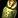 Canopic Jar | Mount | The Canopic Jar itself is not a rare artifact project, but it can contain Recipe: Vial of the Sands. The recipe will only drop for Alchemists, is not a guaranteed drop, and is Bind on Pickup however, the mount associated with it Vial of the Sands is not BoP, so you can sell it. |